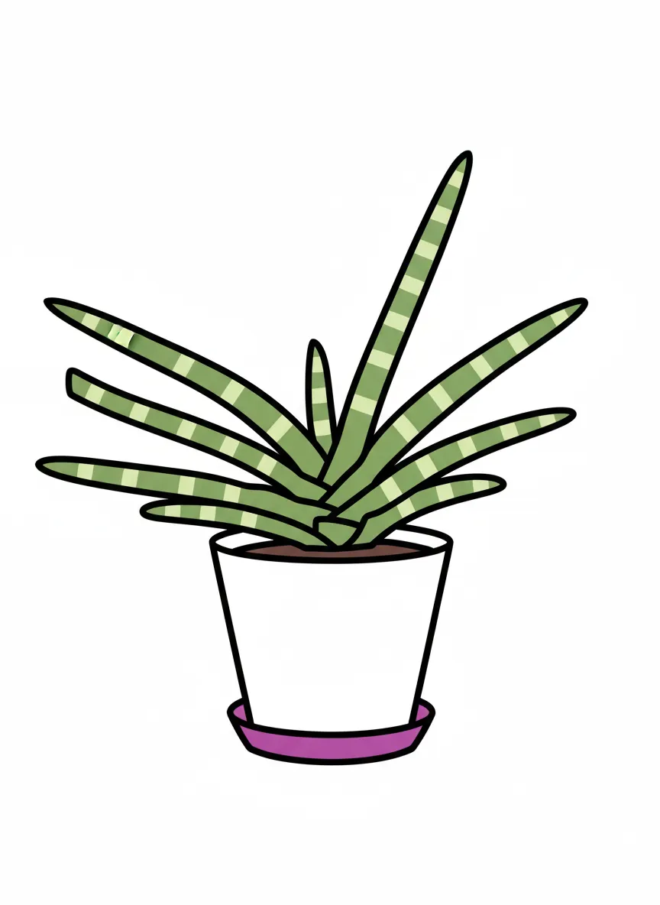
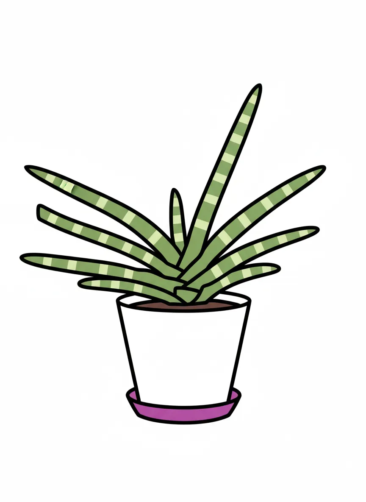
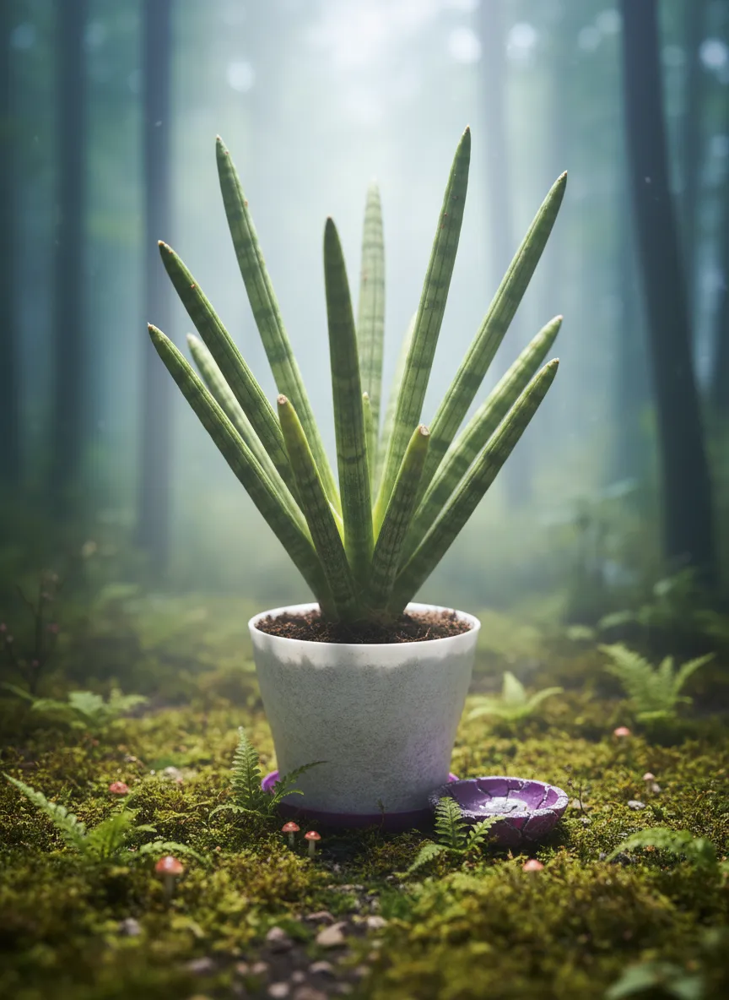
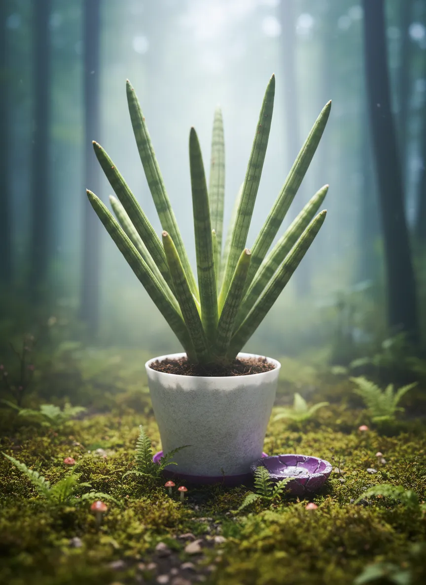

Alex Jobs

 

 

Plant Mood
Alex Jobs: a name that demands disruption. This Sansevieria Boncel, with its distinct, minimalist form and fair health, clearly believes in ‘less is more’ – especially when it comes to watering. It’s got that signature look, always ready to launch a new, revolutionary leaf that will change the indoor plant game forever. Its spirit? Think different. Or at least, look different.
Plant Details
| Custom Name | Alex Jobs |
| Scientific Name | Dracaena angolensis |
| Health | Fair |
| Size | 30 |
| Environment | Livingroom window |
| Has Grow Light | Unknown |
| Pot Type | potPlastic |
| Pot Soil | coconutCoirOrPeat |
| Pot Size | 15 |
| Has Drainage | Yes |
Care Schedule
| Action | Last Done | Next Due |
|---|---|---|
| Watering | ||
| Fertilizing | - | |
| Repotting | ||
| Cleaning | - | |
| Progress Update | ||
| Misting | - | - |